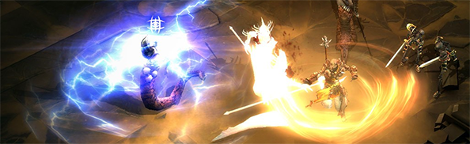

Rendons sa magie à la magie
L'article original est écrit par Ernest Adams publié par Gamasutra (mars 1999).
L'auteur original n'est en aucun cas reponsable de la précision de cette traduction.

Si vous avez déjà joué à un vieux jeu sur ordinateur, un jeu vraiment vieux (sur un macro-ordinateur relié à un terminal d'impression), vous vous souvenez sûrement que ce qui en sortait ressemblait à ceci :
« Nous sommes en l'an 3 de votre règne. La population compte 1937 citoyens. Au cours de l'année écoulée, 24 citoyens sont morts et 92 citoyens sont nés. Vous avez 178 acres de terre cultivée et 241 sacs de grain dans les greniers.
Combien de sacs voulez vous semer cette année ? »
Ce qui saute aux yeux dans cet exemple c'est qu'il est plein de chiffres. Les ordinateurs ne manipulent que des chiffres, bien sûr, et c'est pour cela que tous les jeux vidéos sont nécessairement des modèles mathématiques. Dans les premiers jeux sur ordinateur, le modèle mathématique était proche de la surface : puisqu'il n'y avait pas de graphismes, les concepteurs ne pouvaient pas faire mieux que de vous renvoyer des nombres avec des petits bouts de texte au milieu pour les relier.
Ce n'est aujourd'hui plus le cas et au fil des années nous avons appris à cacher ou à déguiser les nombres, notamment en empruntant les techniques d'affichage de statistiques : nous utilisons des barres, des voyants colorés, des panneaux de contrôle, et tout un tas d'autres mécanismes pour présenter des données numériques sans afficher aucun nombre à l'écran. C'est parfois même fait de façon très intelligente, en utilisant un moyen d'afficher l'information direct et en rapport avec le jeu. Dans Doom par exemple, il y avait un portrait de votre personnage en bas de l'écran pour vous représenter. Quand vous vous faisiez toucher, le visage devenait de plus en plus ensanglanté, il piquait du nez et avait l'air de plus en plus épuisé. Quand vous vous soigniez, vous aviez l'air moins répugnant et plus alerte. Le portrait affichait aussi d'autres informations ; quand vous ramassiez des armes, il souriait comme un dément pendant une seconde ou deux. C'était un mécanisme intelligent et bien conçu pour afficher différentes variables sur un petit espace.
En plus de ça, il y avait dans Doom une jauge de vie qui indiquait de manière chiffrée la vie qu'il vous restait. Étant donné qu'on pouvait se renseigner sur le portrait, le compteur était redondant et je pense que c'était une erreur.
A chaque fois que l'on affiche un nombre « brut » à l'écran, on se raccroche à notre héritage de terminal d'impression. Si votre monde de fantaisie fait vraiment intervenir des nombres, comme dans une simulation de business ou de conduite d'un véhicule militaire moderne, pas de problème. Mais si vous incarnez un space-marine ou un chevalier errant, vous ne devriez pas voir des nombres à tous les carrefours. Aucun chevalier n'a jamais regardé son armure pour conclure « Ouaip, celle là peut encore recevoir exactement 37 coups ».
En plus de cela, il y a des variables de jeu dont la valeur devrait être imprécise. L'essence et les munitions peuvent et doivent avoir des valeurs précises, mais pas la santé et la résistance d'une armure. Je suis bien conscient que personne n'a envie de simuler la santé de façon complètement réaliste en s'occupant indépendamment de chaque membre ou organe et en simulant les effets des dégâts reçus de façons différentes selon les parties touchées, mais d'un autre côté, afficher une valeur numérique absolue nuit à la suspension volontaire d'incrédulité du joueur. Si vous tenez à afficher la santé du joueur dans une barre, vous pouvez appliquer du flou à l'extrémité de la barre. Ce n'est pas parce que la santé du joueur est stockée en dur par le jeu qu'il faut la donner telle quelle au joueur.
Tout cela est encore plus vrai en ce qui concerne la façon dont on gère la magie. Nous avons emprunté les mécanismes de Donjons et Dragons pour implémenter la magie, et cela nous a donné un modèle mathématique utile. Mais Donjons et Dragons est un jeu de rôle papier dans lequel les calculs doivent être effectués au vu et au su de tous pour que personne ne triche. C'est inutile dans un jeu -vidéo : les petits calculs et les valeurs devraient être enterrés assez profondément pour que le joueur n'en voit pas la trace.
La magie est une affaire de superstition et d'émotion, et la croyance en la magie émerge de l'intersection de deux besoins humains. Le premier est le besoin d'expliquer un univers hostile et incompréhensible. Nous ne sommes peut-être pas capables de contrôler la mort, les épidémies, la qualité des récoltes ou la météo, mais il est rassurant de penser qu'il existe des connaissances occultes qui donnent des réponses et des pouvoirs. L'autre besoin est le désir de croire qu'il existe une forme d’Être supérieur qui n'est pas sujets aux revers du destin et du hasard. L'idée d'un tel être nous donne l'espoir qu'Il vienne pour apaiser les souffrances et la détresse de l'humanité, ou qu'en L'imitant on puisse devenir comme Lui.
Pendant les siècles précédents, quand le paradigme dominant pour comprendre l'univers était surnaturel, l’Être en question était Dieu ou une panoplie de dieux et esprits. De nos jours, le besoin de croire en de telles choses est toujours présent, mais le paradigme a changé. Le paradigme dominant d'aujourd'hui c'est la science et la technologie, et Dieu a été remplacé pour beaucoup de gens par les « aliens », puissant et bienfaisant (du moins on l'espère). En fait, il existe un débat vieux de plusieurs siècles sur le sujet : quand Dieu reviendra, sera-t-Il un Dieu vengeur venu plonger l'humanité dans la damnation, ou nous apportera-t-Il la lumière, la paix et la félicité ? Aujourd'hui on se demande : quand les aliens viendront, seront-ils des êtres supérieurs et avides de conquêtes venus prendre possession de notre planète, ou seront-ils bienfaisants et venus nous offrir une technologie plus avancée pour améliorer nos vies ? C'est exactement le même débat ; seul le contexte a changé.
On remarque aussi le phénomène dans la terminologie utilisée par les charlatans pour vendre des soins aux gens les plus crédules. Pendant l'antiquité ils vendaient des amulettes et des charmes censés éloigner les mauvais esprits. Au moyen-âge, ils vendaient des reliques : des os des Saints et des fragments de la Vraie Croix qui étaient censés attirer la bienveillance de Dieu à l'égard de leurs possesseurs. Aujourd'hui ce sont les cristaux et les bracelets en cuivre, et le langage n'est plus celui de la spiritualité mais de la technologie. Ces objets « concentrent les champs biomagnétiques » ou « canalisent les flux d'énergie » (enfin il paraît), tout cela n'aurait rien voulu dire il y a mille ans. Ce sont toujours des charlataneries, mais des charlataneries de pseudoscience plutôt que de religion.
Ce que je veux dire par là c'est que rien de tout cela n'est rationnel. La magie, ancienne ou moderne, émerge d'une zone pre-rationnelle de l'esprit humain. Elle est imaginée depuis le système limbique du cerveau, à partir de la peur, des désirs, des attentes, des craintes, des interrogations et de l'horreur. En tant que développeurs de jeux, nous sommes mal placés pour comprendre cela. Nous sommes des gens qui vivent avec des ordinateurs et des ingénieurs. Nous faisons parti de ceux qui ont réussi leurs études scientifiques à l'école et à qui les mots « algèbre de Boole » ne font pas peur. Nous sommes les héritiers de cinq siècles de rationalisme…et cela se voit dans les jeux que nous faisons. Notre magie n'est pas magique, elle est mécanique.
Arthur C.Clarke a un jour écrit que n'importe quelle technologie suffisamment avancée est virtuellement indiscernable de la magie. Il ne parlait pas spécialement pour nous, utilisateurs des technologies modernes ; il voulait dire que la réponse culturelle à la technologie est relative. La distinction entre magie et technologie repose sur l'attitude de l'observateur. Quand un paysan médiéval lambda était confronté à un phénomène mystérieux et inexplicable, il l'interprétait comme l'œuvre de Dieu, de sorcières ou de démons. Quand nous observons des phénomènes inexplicables, nous les mettons sur le compte de principes scientifiques pas-encore-compris.
Quand nous, développeurs de jeux, implémentons la magie dans les jeux, nous devons mettre notre rationalisme et notre point de vue technologique de côté un petit moment. Nous devons nous plonger dans ce marécage bouillonnant de superstitions et d'émotions que nous avons éliminé avec tant d'efficacité, mettez-y la main pour en ressortir une poignée de saletés et apprenez à travailler avec. Pensez à la magie comme y pensent les gens qui croient en la magie. Si vous incarnez un sorcier, vous n'êtes pas un genre de comptable médiéval, occupé à additionner ses points de mana sur un grand registre : vous êtes un être humain qui a été touché par la main du Tout-Puissant. Si vous incarnez une sorcière, vous ne passez pas votre temps à faire rentrer et sortir des sorts de votre cerveau comme si il s'agissait de balles dans un pistolet, en vous demandant lesquels vous devriez emmener avec vous : vous êtes une personne extraordinaire et terrifiante : les forces inconcevables de la nature tonnent à travers votre corps dans un torrent enragé à peine en votre contrôle. On ne devrait pas penser à vous comme « une personne pratique à avoir dans l'équipe » ; vous devriez être une personne à côté de qui est il est extrêmement dangereux et effrayant de se trouver.
Regardez la façon dont sont gérés les objets magiques dans la plupart des RPG fantastiques. Vous marchez dans la forêt et vous trouvez un bâton. une fois sur deux, vous savez immédiatement de quoi il s'agit, c'est tellement bien étiqueté que ça doit être gravé sur la tranche : « Bâton, magique, éclair+3. Propriété du gouvernement américain. Tout utilisateur non habilité sera poursuivi en justice. ». Ça ou alors il n'y a pas l'étiquette et vous devez l'apporter à une vieille chouette que connaissez qui a comme de par hasard la capacité d'identifier chaque objet magique jamais conçu.
« Salutations, bel aventurier ! Samantha peut-elle faire quelque chose pour vous aujourd'hui Messire ? Ah, oui. Messire possède un bâton, magique, éclair+3. Puis-je faire autre chose pour vous, Messire ? »
La réponse émotionnelle de nos personnages à ces objet est l'indifférence la plus glaciale. La plupart du temps, on ramasse ces trucs plein d'aplomb, en toute équanimité, et on se balade avec sans faire de commentaires. Si vous devez combattre, votre seule préoccupation est alors de planifier sur qui vous allez utiliser votre bâton. « Mh voyons voir, je vais te foudroyer toi, et toi aussi, et…. mh toi. »
Ce ne va pas. On parle d'un bâton magique de la foudre là, pas d'un moulin à poivre. La réponse émotionnelle appropriée à cette trouvaille n'est pas « Oh, super, ça peut servir ». Un bâton magique de la foudre est un objet dont le pouvoir est terrifiant, capable d'invoquer une des forces élémentaires de l'univers. Notre personnage convaincu de l'existence de la magie devrait répondre comme vous si on vous mettait dans les mains une bombe atomique armée :
« Oh Pu#&%$ !! Je viens de ramasser un bâton rempli d'éclairs ! Merde ! J'espère qu'il ne va pas me faire exploser la tête. »
Nous devons changer la façon dont nous traitons la magie dans les jeux, et nous devons aussi changer, dans une certaine mesure, la façon dons nous la programmons. Pour l'instant, nous traitons les sorts et les objets magiques de la même manière que les autres objets et outils. Mais les objets magiques ne sont pas des armes. La magie est étrange et mystérieuse, elle est bizarre, dérangeante et grotesque, elle est dangereuse, éblouissante et belle. La magie est surnaturelle, dans tout le sens extraordinaire du mot. Par dessus tout, la magie est imprévisible, la magie n'est pas fiable, la magie n'est pas mécanique. Nous devons rendre la magie magique à nouveau.
Ajouter un commentaire
Commentaires

Magicka est un bon exemple en faite :)
Pour créer des sorts on doit combiner 8 éléments : eau, terre, feu, électricité, glace, arcane, soin, protection. Mais attention aux sortilèges opposés.
On a pas de mana, les sorts sont infinis et la difficulté se juge sur la vitesse d'accomplissement des sortilèges par le magicien. Après on a des sorts spéciaux, comme la foudre que l'on obtient en ramassant des parchemins magiques. On peut même enchanter son épée.
Et la barre vie est un peux moins indiqué. Dans la mêlée on ne l'aperçoit pas toujours, tellement on enchaîne (soin, défense, attaque).

Cependant, ce concept très crédible de par son approche scientifique ne semble envisageable que pour un jeu ou le joueur incarne un mage.
Le joueur est bien un mage, ce jeu devrait être principalement basé sur la magie.
(n'hésite pas à donner le nom du jeu à sa sortie).
Je n'y manquerais pas, mais vous avez encore le temps. Je le commencerais vraiment qu'au mois d’août après avoir finis le boulot…
En tout cas merci pour tes remarques, elle m'ont fait bien plaisir ^^

Un bon article qui mérite d'être lu et qui fait réfléchir sur le décalage entre la magie imaginée spontanément et la magie dans les jeux vidéos. Je suis content de voir qu'il est encore lu. ^^
@Elried: J'applaudis (des deux mains)cette idée originale de considérer la magie comme un spectre de flux élémentaire formant un tout. Je dois avouer que la pertinence du concept et les possibilités d'application au gameplay me laissent pantois. En effet, en fonction du nombre de flux élémentaire, on peut imaginer un nombre impressionnant de combinaisons (et de sorts ?).
Cependant, ce concept très crédible de par son approche scientifique ne semble envisageable que pour un jeu ou le joueur incarne un mage. Le point fort de l'approche est aussi sa faiblesse: la magie peut devenir plus une science qu'un art, et perdre son aspect mystique ( ne dit-on pas "Ouah, c'est magique!" des mystère que la science n'explique pas -encore- ?).
Cette critique est bien sur un avis personnel sur l'exposé rapide que tu a pris la peine de faire (et je t'en remercie, ce fut enrichissant) et ton système pris dans sa globalité ne tombe peut-être pas dans cet ecart. En tout cas, n'hésite pas à nous contacter pour nous donner des nouvelles de ce système prometteur (n'hésite pas à donner le nom du jeu à sa sortie).
--Bonhomme
Ouais mais concrètement qu'est ce qui peut être mis en place dans un jeu?
Personnellement, j'ai essayé de définir un système de gestion de la magie en me basant sur cet article, et pense peut-être tenir quelque-chose. J'ai essayé d’éviter plusieurs classiques de la magie numérique.
La nature de la magie
Bien que la magie soit quelque-chose d'obscur, je considère que le joueur doit pouvoir la comprendre. Ainsi, le système de dégât et des autres joyeusetés (cout en mana etc…) se base sur D&D, c'est à dire, tel sort a telle chance de faire entre tant et tant de dégât, pour un cout en mana de tant.
Cependant, ces éléments sont influencés par plusieurs choses.
Les flux
La Magie est un flux, qui peut être décomposé en flux élémentaires, un peu comme la lumière. En apposant des filtres, on peut donc définir quel type de flux (d’élément) domineras dans le sort. Les divers matériaux utilisés pour l'équipement ou l'environnement, peuvent agir comme des filtres naturels. Plus le joueur emmagasine des connaissances IG, plus sa connaissance des flux devient poussée et plus ces derniers deviennent puissants. Ce qui nous emmène à la partie suivante:
La canalisation
Pour pouvoir être utilisés correctement, les flux de magie doivent être canalisés pour leur donner une forme. Là aussi, le système de connaissance entre en jeu. Plus le joueur (et son personnage) auras d’expérience dans un type de canalisation, plus il sera à même d'en tirer toute la puissance possible. Ainsi, avec ce système, un sort se compose de deux composantes: 1. Les flux élémentaires utilisés 2. La forme de la canalisation souhaitée
Ces éléments permettent selon moi d'avoir une magie étrange, mais compréhensible pour le jour de manière à ne pas le frustrer. Cependant, la magie ne s’arrête pas là… car la magie est aussi dangereuse.
Les dangers de la magie
Comme nous venons de le voir, les flux doivent être canalisés… Cependant, que ce passe-t-il lorsque que la puissance des flux à canaliser outrepasse la capacité de contrôle du lanceur? Le sort 'explose' et produit des effets inattendus. Ces effets peuvent être: Pas d'effet Libération des flux de manière dévastatrice (dégât ennemis) Retour de flamme (dégât joueur) Épuisement du lanceur *…
Nous avons maintenant une composante de la magie qui fait peur. Il nous reste donc à définir un peu les 'bonus'.
Bonus
Les objets magiques
Finis les bâtons de force +5, les flux de magiques ne sont pas si faciles à lire. Je me suis inspiré du système du nom des armes présent dans WoW ou certaines armes portent des noms d'animaux pour spécifier leurs caractéristiques. En effet, comme je l'ai dit plus haut, les éléments agissent comme des filtres naturels. Ainsi, par exemple le sapin ne pourrait laisser passer que le flux de feu. Un bâton de sapin serait donc un 'Bâton de Feu +1' Enfin, certains éléments pourraient si bien filtrer les flux, qu'il apposerait des malus.
Lancer un sort
Ce dernier point et lié au support que j'ai choisis (la DS). En effet, quoi de moins magique que de cliquer sur un bouton pour lancer une boule de feu? Mon système utilise donc le stylet. Le joueur doit donc dessiner des symboles correspondants aux flux et au marque de canalisation qu'il souhaite utiliser, ce qui augmente l'immersion dans la magie, la rendant moins automatique d'une simple icône avec marqué: "Boule de Feu (rang 12)"
J’espère avoir pu te montrer comment on peut implémenter concrètement certaines notions de cet article. Je reste de plus ouvert à toute idée, critique ou conseil pour améliorer ce système.
Cordialement
--Elried
Ouais mais concrètement qu'est ce qui peut être mis en place dans un jeu?
--Torod
Cette article est génial ! Merci, merci, merci !!
Et cette inscription toute simple ^^ faudrait le mettre partout ce système.
--Yarflam
Excellent article, m'expliquant clairement et précisément (oui, je suis programmeur) ce que mon collègue essaye de me faire comprendre depuis quelque temps déjà :D
mains une bombe atomique armée : "Oh Pu#&%$ !! Je viens de ramasser un bâton rempli d'éclairs ! Merde ! J'espère qu'il ne va pas me faire exploser la tête."
hilarant
--Pompei2